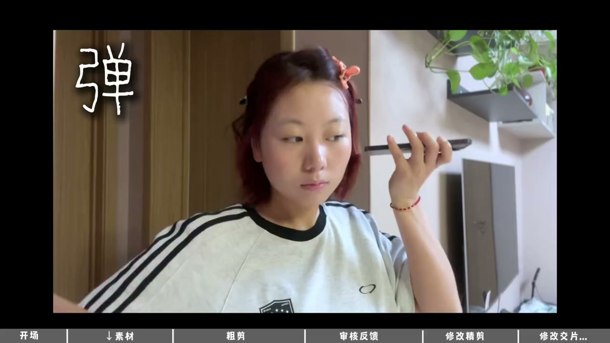

内容要点
这是一条美妆全系列测评口播的剪辑日志：作者记录从接收素材、粗剪、送审、按反馈修改到包装交付的过程。标题中的“800”应为报价口述，但币种和计价范围未在视频中确认。
接到全系列测评口播任务
作者说此前剪辑的一条视频表现不错，因此收到更多来自客户和 PR 的需求。本次任务是一条开箱口播性质的全系列测评，视频用“800”介绍这条工作的价格，并以计时方式记录剪辑进度。

[00:00] 任务开场：作者说明新接到一条全系列测评口播的剪辑工作。
Task opening: the author explains taking on an editing job for a full-series review voice-over.
拆解品牌补充信息与素材结构
品牌方提供了较多补充内容，作者需要让成片贴合客户既有风格，同时了解各口红色号及重点。素材总长约 40 分钟，分为上嘴、手臂试色和全景三类，可理解为一段 A-roll 配合两类 B-roll，剪辑时需要穿插使用。
完成粗剪：40 多分钟压缩至 8 分多钟
从 11 点半开工，到下午 4 点完成粗剪，作者将 40 多分钟素材收至 8 分多钟，并先发给客户和 PR 审看整体节奏。其间也提到，全系列彩妆内容需要在信息量与观看感受之间做取舍。
[00:50] 粗剪阶段：从长素材中保留口播重点，并穿插上嘴、试色和全景素材。
Rough-cut stage: keep the voice-over key points from long footage, weaving in lip swatches, color tests and wide shots.
根据反馈重排主推色与其他色
反馈到达后，作者将修改意见归纳为：主推色与其他色尚未分开，应延长主推色展示时间，其余颜色改为四宫格展示。转录中夹杂了若干无法辨识的词语，但这两项修改要求在后续说明中较为明确。
精剪、包装与商用字体检查
作者认为反馈明确会提高修改效率，于是进入精剪和包装阶段。为规避版权风险，视频中说明所有字体均使用可商用字体；19:50 左右完成包装，成片时长约 7 分钟并发出。
[01:38] 精剪与交付：按明确反馈完善重点展示、包装画面，并使用可商用字体。
Fine cut and delivery: refine feature highlights and packaging per clear feedback, using commercially licensed fonts.
交付尚未结束，等待最终修改
客户表示暂时无大问题，PR 则说明次日早上再给反馈。第二天早上作者收到新的小修改方案，预计再处理约一小时即可交片。视频没有展示最终版本或确认最终交付时间，因此无法判断该项目的实际总工时。